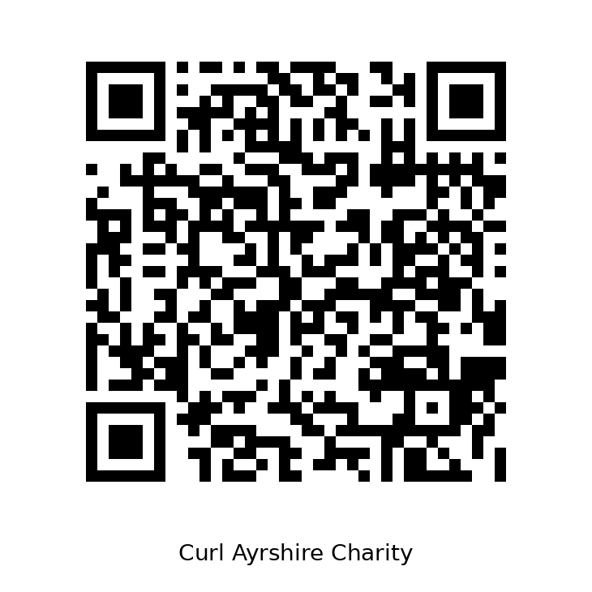

Funding
Working together to bring curling home.
Making It Happen
Creating a new curling and community facility at Somerset Park is a major undertaking, with a project cost close to £3 million. Curl Ayrshire Charity (CAC) is developing a funding package to secure the investment needed to build the facility and establish a sustainable future for curling in Ayrshire.
Bringing the Funding Together
Our funding strategy brings together several potential sources of support:
- Grants — seeking support from public bodies, sporting organisations and other grant funders.
- Trust Funds — approaching family trusts, charitable foundations and other trusts whose priorities align with our project.
- Loans — exploring suitable financing options to help fund the development.
- Corporate Sponsorship — inviting businesses to support a major community project and become part of its future.
- Donations and Pledges — encouraging individuals, curlers, families and supporters to help bring the vision to life.
- Community Fundraising — developing opportunities for clubs and the wider community to get involved.
Help Bring Curling Home
Every pledge brings us closer to a new home for curling in Ayrshire.
£120,000 pledge target
18.3% of our target
How You Can Help
Whether you represent a business or want to support the project as an individual, there are ways to get involved.
Corporate Sponsorship
We welcome conversations with businesses interested in sponsorship, partnerships or other forms of support.
Pledge Your Support
Register your pledge to help make the new facility a reality.
Open the pledge form or scan the QR code.

Your support can help bring curling home and create a lasting community legacy.